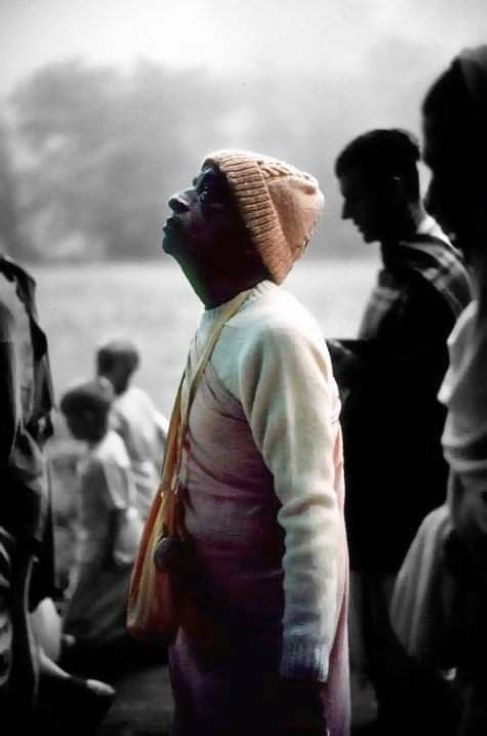

“You do not know about Lord Nityananda’s mercy”
Posted on : 15th June, 2025

Prabhupada had a disciple named Chaita Guru, who was a Sikh by birth. Chaita Guru used to drive Giriraj Swami and me around Bombay to make Life Members and collect money to build the Vrindavan temple. After a while, this devotee thought that he should make his own way in spiritual life. He started canvassing Life Members and collecting donations on his own. I approached Prabhupada saying, “We have to write something to our Members to warn them about this person.” Prabhupada hesitated. He was not ready to give up on this devotee. But when Chaita Guru started living with a bhogi yogi on Juhu beach to learn the art of passing a coin into one ear and out the other ear, I said, “Prabhupada, now it’s reached the limit. It’s the end. It’s finished.” Prabhupada looked at me and said, “You do not know about Lord Nityananda’s mercy.” I said, “Why Srila Prabhupada?” He said, “Because there is no limit to Lord Nityananda’s mercy and compassion, no end to His forgiveness.” Later on, sure enough, that devotee came back, and Prabhupada tried to help him. He gave this person sannyas. Chaita Guru eventually left, but I met him a year ago and he is still on some type of spiritual path. Srila Prabhupada is the manifest representative of Lord Nityananda Prabhu. His forgiveness is like Lord Nityananda’s. In terms of dealing with our own shortcomings and in terms of dealing with each other, we have to always remember that there are very few instances in the history of ISKCON when Prabhupada rejected a devotee. It was very, very, very, very rare.
~ HH Tamāl Krsna Goswāmi, Interview 01 Prabhupād Memories
Jay Śrīla Prabhupāda!